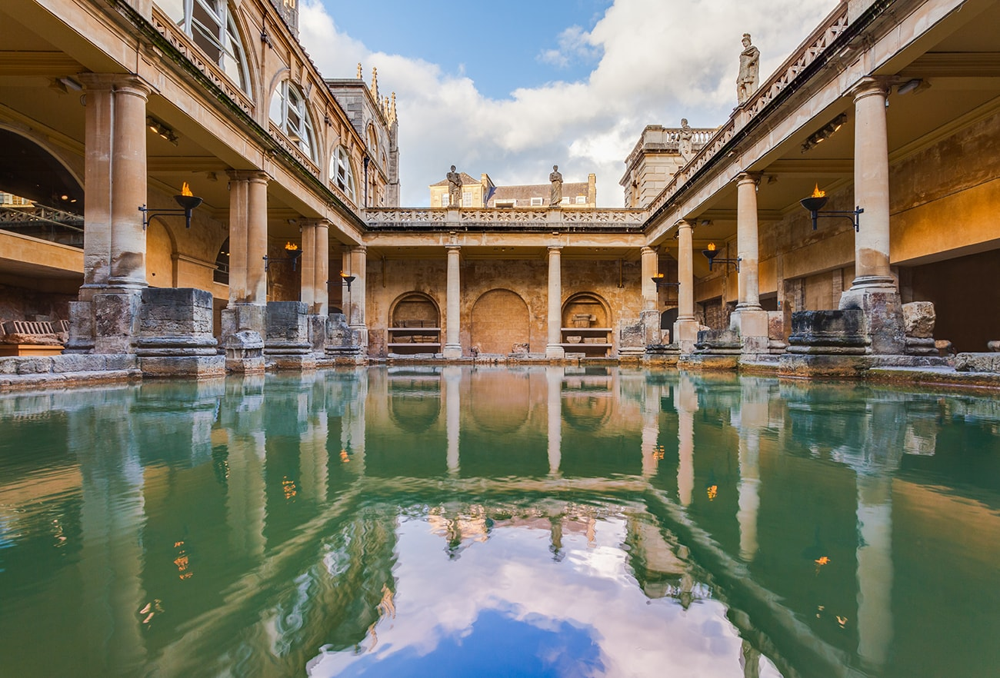

War mask worn by Saxon king - with tache
To Agitius [or Aetius], thrice consul: the groans of the Britons. [...] The barbarians drive us to the sea, the sea drives us to the barbarians; between these two means of death, we are either killed or drowned.
-446AD
This was the desperate final appeal from the Britons to the Roman high command, imploring them
to return Imperial authority (and more importantly the army) to the island. This came almost 80 years after the
Great Conspiracy; an enormous invasion of Scottish, Irish and German barbarians which ravaged the island and
precipated its rapid decline. The remaining troops left with the usurper Contantine the third in 407, leaving the inhabitants
at the mercy of savage neighbouring kingdoms.
They're plea for aid from they're once mighty Metropole would go unanswered, forcing the Romanized
population to turn to Saxon mercenaries for protection, thereby inviting the fox into the henhouse.The Saxons would quickly turn on
on their rich, vunerable paymasters. Beginning with extortion and quickly breaking into open hostility, they would eventually carve out a series of Kingdoms,
forcing the native Britons to retreat West into mountainous Wales.

The Groans of the Britons was relayed to us one hundred years later by the 6th century cleric Gildas. Decribing his own time
he speaks candidly of "plague" and the "two plundering races". He describes the deplorable condition of his people thus: "Some therefore, of the miserable remnant, being taken in the mountains,
were murdered in great numbers; others, constrained by famine, came and yielded themselves to be slaves for ever to their foes, running the
risk of being instantly slain… some others passed beyond the seas with loud lamentations instead of the voice of exhortation… Others,
committing the safeguard of their lives, which were in continual jeopardy, to the mountains, precipices, thickly wooded forests, and to the
rocks of the seas (albeit with trembling hearts), remained still in their country."
This is an apocalypse for the people of Briton, in a way we could barely fathom as a modern society. Their cities lie abandoned and fall into ruin. Refugees flood across the channel in search of sanctuary.
Those that remain eek out an existance in barren lands, living in terror of murderous raiders from what was once their homeland. However in a twist worthy of a
Hollywood blockbuster this remnant of a shattered people finds brilliant leadership in the form of Ambrosius Aurelianus, a Romano-British war leader who rallies his people
to the decisive victory over the Saxons at the battle of Mons Badonicus, generating the epic of King Arthur in the process. Alas, although the Saxons
had been stunned, Gildeas describes the decent of the victorious Britons into renewed civil strife. "But not even at the present day are the cities of our country inhabited as formerly; deserted and dismantled,
they lie neglected until now, because, although wars with foreigners have ceased, domestic wars continue."
The Anglo-Saxon Bede writing around 731 described areas of northern Germany and Denmark as "deserted" as a result of heavy immigration to Britain. The fate of the Britons remains a contencious issue
to this day. Archaeology records speak to an enormous and rapid material change of culture that greeted the arrival of the Anglo-Saxons. This evidence supports the bleak and
bloody descriptions provided by Gildeas on the conquest. Recent genetic studies have revealed a more nuanced picture, one where the Britons remained a substantial presence in the region.
Although this cannot attest to the condition of they're lives.